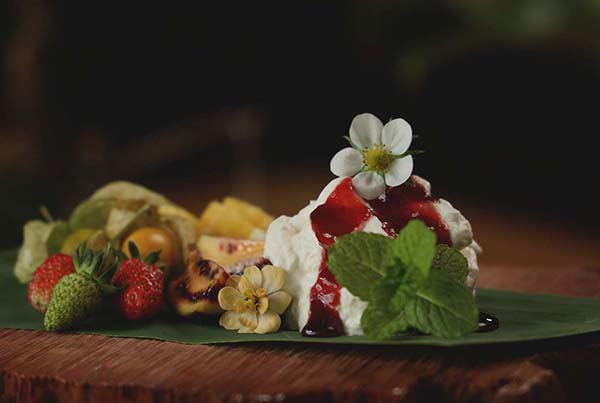
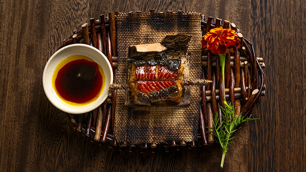
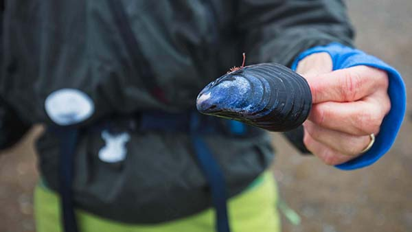
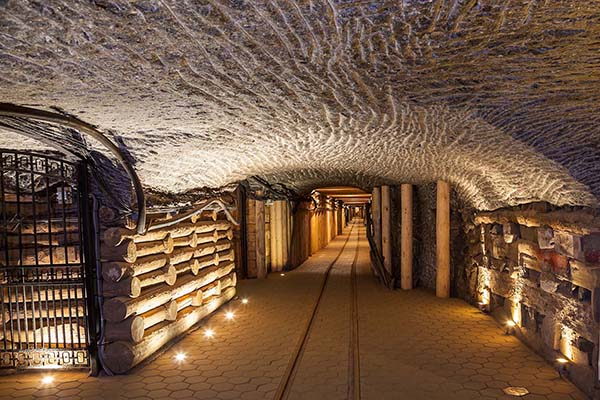
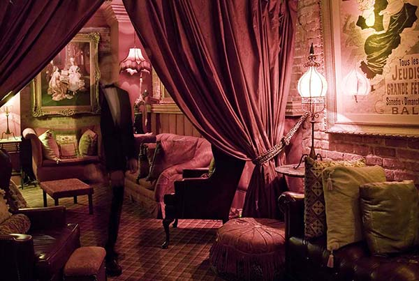
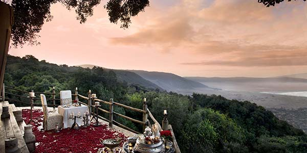
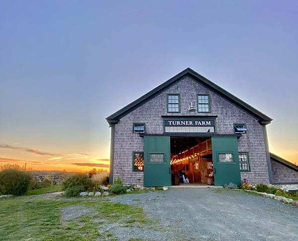
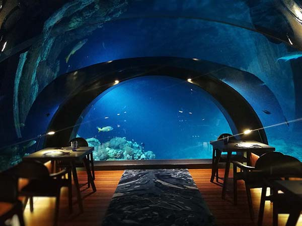
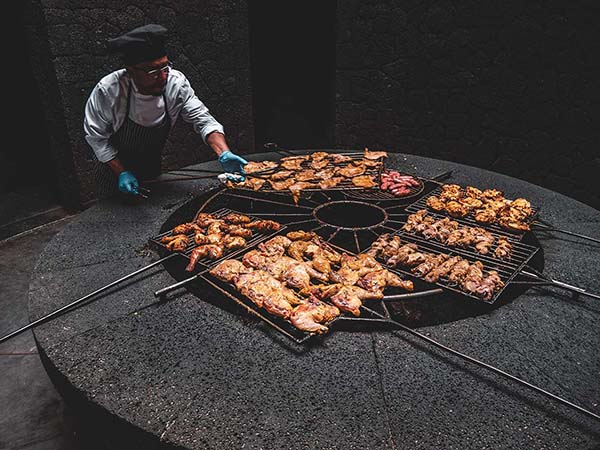

Unearth the Unexpected

Hike through Panama's cloud forest near Boquete on Hacienda Mamecillo's day tour. Explore the Chiriquí Highlands for 3 hours (adaptable to fitness level) with waterfalls and birdwatching. Savor a 7-course farm-to-table lunch with local ingredients before a farm tour, including the greenhouse and animals. Learn about sustainable practices and wrap up with a coffee tasting, discovering the bean's journey from plant to cup. (Dietary restrictions welcome!).
Book your adventure now!

Ilis

Isfjord Radio Restaurant

Karczma Gornicza

Muriel's Jackson Square

Ngorongoro Crater Lodge

Turner Farm Barn Supper

5.8 Undersea Restaurant

El Diablo Restaurant
Hacienda Mamecillo